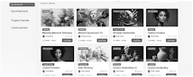

Blueprints for Better Foundation
A student-led nonprofit empowering young people through hands-on building, design, and community projects.
Learn More eastWe design and build modern, easy-to-use websites for nonprofits and community organizations, helping them share their mission, reach more people, and create a stronger online presence.
Websites that we have created for nonprofits to help them strengthen their online presence, share their mission, connect with their communities, and make their resources more accessible to the people they serve.
A student-led nonprofit empowering young people through hands-on building, design, and community projects.
Learn More eastECHO by Takemoto provides therapeutic violin performances for seniors in nursing homes, supporting mental well-being and compassionate care.

Interactive platform for accessible arts education.

Measuring the tangible outcomes of well-architected digital solutions in the nonprofit sector.